<!DOCTYPE lake>
<h1 data-lake-id="au1V4" id="au1V4"><span data-lake-id="u7f4c5de6" id="u7f4c5de6">语言分类介绍</span></h1><p data-lake-id="u5522914f" id="u5522914f" style="text-align: center">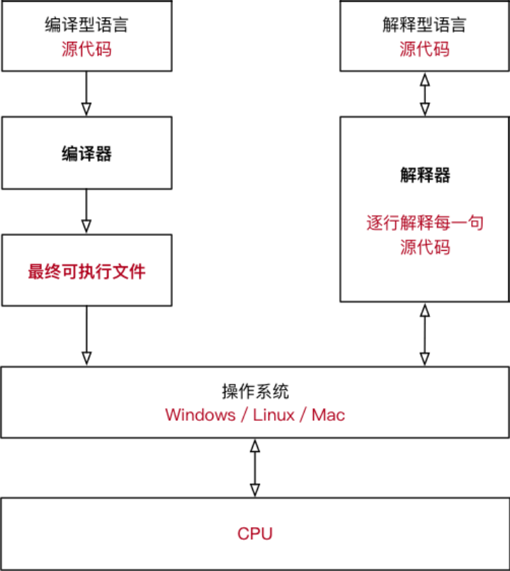</p><p data-lake-id="ufe481650" id="ufe481650" style="text-align: center"><br/></p><ul list="uc1b465a9"><li data-lake-id="u3f1584a4" fid="uae717da9" id="u3f1584a4"><span data-lake-id="u4c22d67b" id="u4c22d67b">编译型语言：C、C++、Java、C#</span></li><li data-lake-id="ud868c324" fid="uae717da9" id="ud868c324"><span data-lake-id="u181b8173" id="u181b8173">解释型语言：Python、JavaScript</span></li></ul><p data-lake-id="ue698b25a" id="ue698b25a"><br/></p><h1 data-lake-id="NlfR5" id="NlfR5"><span data-lake-id="ua4adfd96" id="ua4adfd96">C语言编译器</span></h1><ul list="u0cf8d653"><li data-lake-id="ua8ba4e0b" fid="u244a72b0" id="ua8ba4e0b"><span data-lake-id="u2d530ab2" id="u2d530ab2">GCC 系列</span></li></ul><ul data-lake-indent="1" list="u0cf8d653"><li data-lake-id="uce751e75" fid="u244a72b0" id="uce751e75"><span data-lake-id="u46de974f" id="u46de974f">GNU编译器套装(英语：GNU Compiler Collection，缩写为GCC)，指一套编程语言编译器，常被认为是跨平台编译器的事实标准。原名是：GNU C语言编译器(GNU C Compiler)。</span></li></ul><ul list="u0cf8d653" start="2"><li data-lake-id="u6b2b922c" fid="u244a72b0" id="u6b2b922c"><span data-lake-id="u6479edf4" id="u6479edf4">MinGW</span></li></ul><ul data-lake-indent="1" list="u0cf8d653"><li data-lake-id="uca6c406c" fid="u244a72b0" id="uca6c406c"><span data-lake-id="u8694878a" id="u8694878a">又称mingw32 ， 是将GCC编译器和GNU Binutils移植到Win32平台下的产物。MinGW占用内存、硬盘空间都比较少，能够链接到任意软件，但它对 POSIX 规范的实现没有 Cygwin 库完备。</span></li></ul><ul list="u0cf8d653" start="3"><li data-lake-id="u70afd617" fid="u244a72b0" id="u70afd617"><span data-lake-id="u74b5a754" id="u74b5a754">Cygwin</span></li></ul><ul data-lake-indent="1" list="u0cf8d653"><li data-lake-id="u12396695" fid="u244a72b0" id="u12396695"><span data-lake-id="uad3dca20" id="uad3dca20">Cygwin的主要目的是通过重新编译，将POSIX系统(例如Linux、BSD，以及其他Unix系统)上的软件移植到Windows上 。 Cygwin包括了一套库，该库在Win32系统下实现了POSIX系统调用的API；还有一套GNU开发工具集(比如GCC、GDB)</span></li></ul><ul list="u0cf8d653" start="4"><li data-lake-id="u1163ff17" fid="u244a72b0" id="u1163ff17"><span data-lake-id="u960e6494" id="u960e6494">MSVC系列</span></li></ul><ul data-lake-indent="1" list="u0cf8d653"><li data-lake-id="u3b7d58ae" fid="u244a72b0" id="u3b7d58ae"><span data-lake-id="u7c7ddcb6" id="u7c7ddcb6">与Visual Studio集成发布，微软自己的编译器，专为 Windows 平台设计的私有工具链。VS是一个基本完整的开发工具集，它包括了整个软件生命周期中所需要的大部分工具，如UML工具、代码管控工具、集成开发环境(IDE)等等。</span></li></ul><p data-lake-id="u0ffc0bf8" id="u0ffc0bf8"><br/></p><h1 data-lake-id="vYCrx" id="vYCrx"><span data-lake-id="ue01d62a4" id="ue01d62a4">小熊猫C++开发工具</span></h1><ul list="ub0046702"><li data-lake-id="ud8431980" fid="u96c83885" id="ud8431980"><span data-lake-id="ueef1a49f" id="ueef1a49f">集成开发环境（IDE，Integrated Development Environment ）是用于提供程序开发环境的应用程序，一般包括代码编辑器、编译器、调试器和图形用户界面工具。</span></li><li data-lake-id="u936e4a0c" fid="u96c83885" id="u936e4a0c"><span data-lake-id="u4ea29555" id="u4ea29555">开发工具种类繁多，有vscode、Dev-C++、code lite、clion、Qt Creator等</span></li></ul><ul data-lake-indent="1" list="ub0046702"><li data-lake-id="u2c311538" fid="u96c83885" id="u2c311538"><span data-lake-id="u484ec79f" id="u484ec79f">这里使用的小熊猫版本C++</span></li></ul><ul data-lake-indent="2" list="ub0046702"><li data-lake-id="u6e026c13" fid="u96c83885" id="u6e026c13"><span class="lake-fontsize-12" data-lake-id="ua716a4d1" id="ua716a4d1" style="color: rgb(77, 77, 77)">小熊猫版本C++是国人，在Dev-C++的基础上完善并修改的，符合国人习惯</span></li><li data-lake-id="u80eb6b55" fid="u96c83885" id="u80eb6b55"><span class="lake-fontsize-12" data-lake-id="u4889777a" id="u4889777a" style="color: rgb(77, 77, 77)">官网：</span><a data-lake-id="u3a3d3899" href="https://royqh.net/redpandacpp/" id="u3a3d3899" rel="noopener noreferrer" target="_blank"><span class="lake-fontsize-12" data-lake-id="u9d08f7c6" id="u9d08f7c6" style="color: rgb(77, 77, 77)">https://royqh.net/redpandacpp/</span></a></li></ul><ul data-lake-indent="1" list="ube5ba36d"><li data-lake-id="u018652b8" fid="udb94718e" id="u018652b8"><span data-lake-id="u022b857a" id="u022b857a">网盘链接：</span><a data-lake-id="ueef8bfe6" href="https://wwe.lanzoui.com/b01os0mwd" id="ueef8bfe6" rel="noopener noreferrer" target="_blank"><span class="lake-fontsize-11" data-lake-id="u12706b4e" id="u12706b4e" style="color: rgb(85, 85, 85)">蓝奏云网盘(仅windows版本)</span></a><span data-lake-id="ud67c273b" id="ud67c273b"> 分享码：f0tp</span></li><li data-lake-id="u034e1437" fid="udb94718e" id="u034e1437"><span data-lake-id="ubee9d67c" id="ubee9d67c">下载：RedPanda.C++.3.1.win64.MinGW64_11.4.Setup.exe</span></li><li data-lake-id="u2615d34e" fid="udb94718e" id="u2615d34e">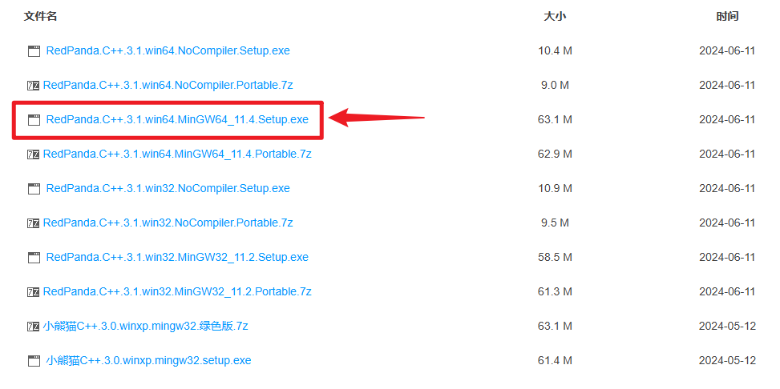</li></ul><p data-lake-id="u9febf2ee" id="u9febf2ee"><br/></p><ol list="u35b0bb14"><li data-lake-id="u7a60f93d" fid="u1b0b4e2b" id="u7a60f93d"><span data-lake-id="udd2336e8" id="udd2336e8">解压即可使用，没有合适压缩软件，请自行下载</span></li></ol><p data-lake-id="uf110483e" id="uf110483e">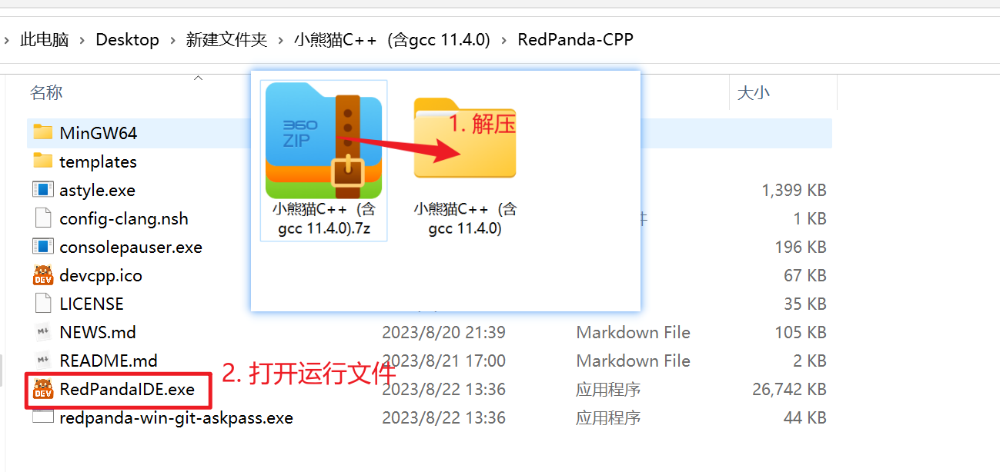</p><ol list="u18bb3739" start="2"><li data-lake-id="u90900cb8" fid="uf6526a7b" id="u90900cb8"><span data-lake-id="u8fa07b71" id="u8fa07b71">选择语言和主题颜色</span></li></ol><p data-lake-id="u541a4ef6" id="u541a4ef6">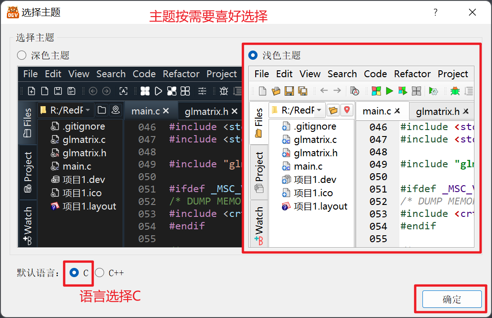</p><ol list="u22b1e274" start="3"><li data-lake-id="ud7059893" fid="udf787ca7" id="ud7059893"><span data-lake-id="udac66fc8" id="udac66fc8">写代码、保存代码</span></li></ol><span class="yuque-card-unsupported">[codeblock]</span><p data-lake-id="u05d67083" id="u05d67083">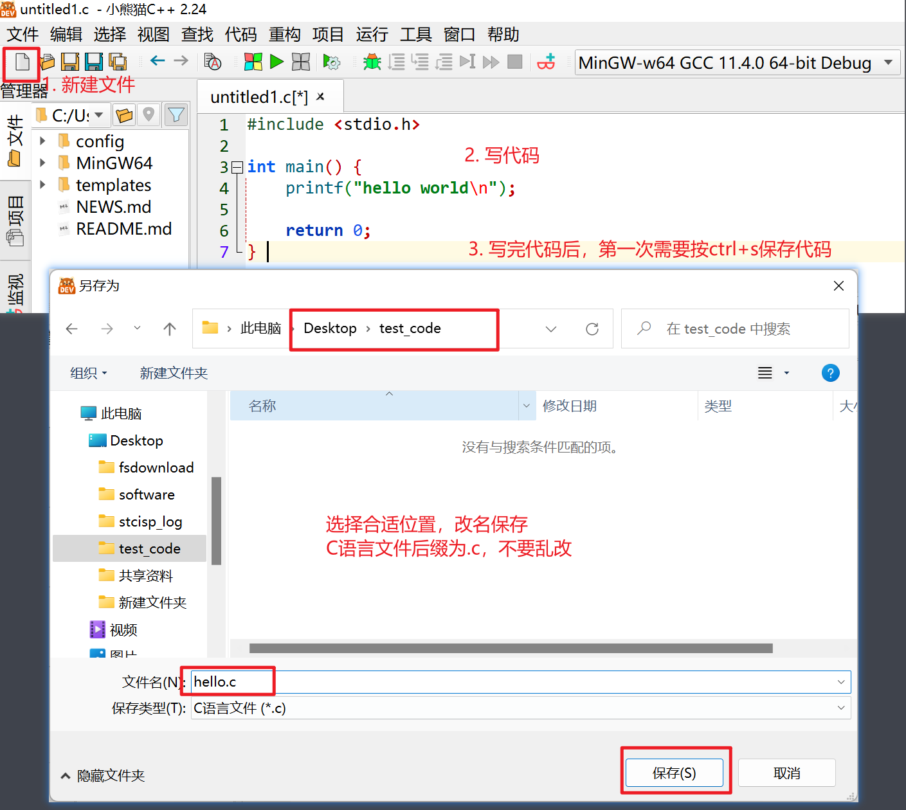</p><ol list="ue4b0119a" start="4"><li data-lake-id="u157ce923" fid="u828e9b6a" id="u157ce923"><span data-lake-id="uf94314a3" id="uf94314a3">运行代码</span></li></ol><p data-lake-id="ue6555e07" id="ue6555e07">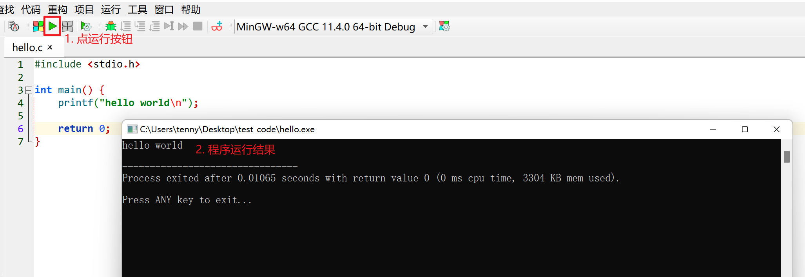</p><h2 data-lake-id="jKKRn" id="jKKRn"><span data-lake-id="ue6670e87" id="ue6670e87">设置代码模板</span></h2><p data-lake-id="u5997cc78" id="u5997cc78"><span data-lake-id="ue1a7d86a" id="ue1a7d86a">用户根据自己喜欢，设置常用代码块，方便写代码时插入代码                                       </span></p><span class="yuque-card-unsupported">[codeblock]</span><p data-lake-id="ua03eb352" id="ua03eb352">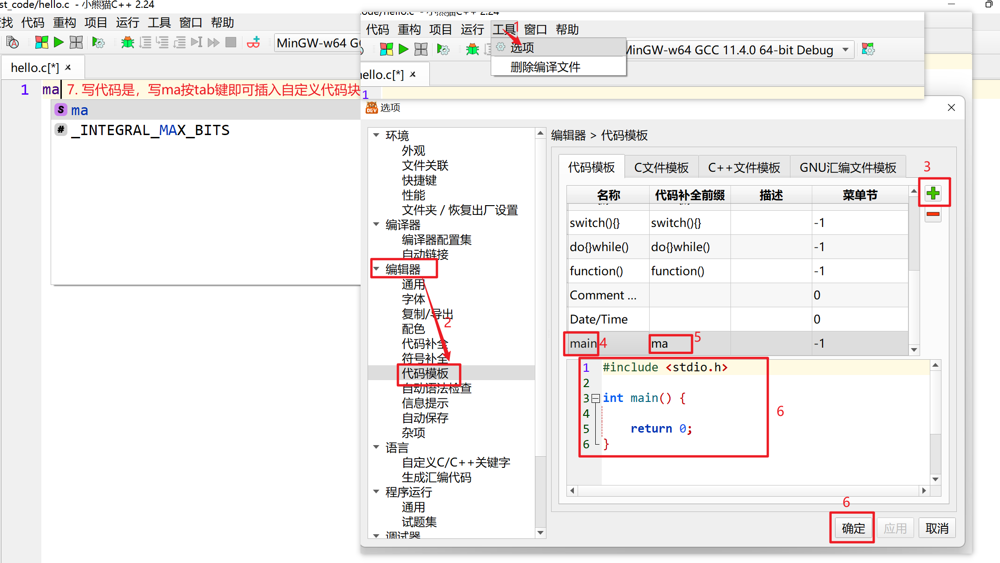</p><h2 data-lake-id="J74AI" id="J74AI"><span data-lake-id="u32d5bede" id="u32d5bede">修改默认文件类型</span></h2><p data-lake-id="u5df81f46" id="u5df81f46"><span data-lake-id="u7aa19538" id="u7aa19538">如果在开始界面时候，没有设置默认文件类型为“C语言”，可以按照如下方式修改：</span></p><ol list="u3805adc7"><li data-lake-id="u6b226ccf" fid="ua7cf8356" id="u6b226ccf"><span data-lake-id="ue74990de" id="ue74990de">打开</span><code data-lake-id="u8a39967a" id="u8a39967a"><span data-lake-id="u09e65853" id="u09e65853">工具-选项</span></code></li></ol><p data-lake-id="u4e6e1bce" id="u4e6e1bce">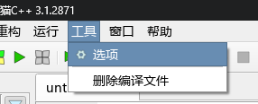</p><ol list="u78eb95ab" start="2"><li data-lake-id="u27d92133" fid="ua4db550c" id="u27d92133"><code data-lake-id="u39a7b043" id="u39a7b043"><span data-lake-id="ubd6d2f41" id="ubd6d2f41">编辑器 - 杂项 - 默认文件类型 - C语言文件 - 应用 - 确定</span></code></li></ol><p data-lake-id="u4d88a0e9" id="u4d88a0e9">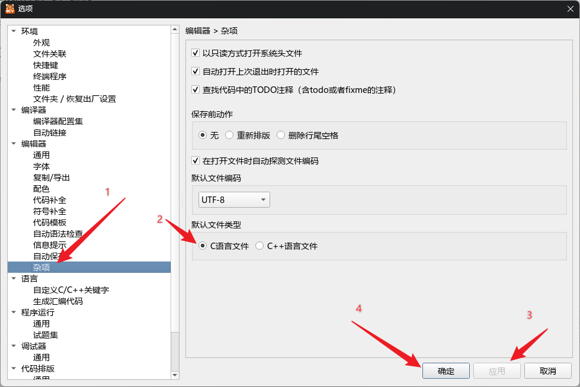</p><h1 data-lake-id="yqZ1j" id="yqZ1j"><span data-lake-id="u48801447" id="u48801447">VSCode/Trae开发工具（可选）</span></h1><h2 data-lake-id="pyCYi" id="pyCYi"><span data-lake-id="uede29758" id="uede29758">MinGW安装</span></h2><ol list="ua07a9c33"><li data-lake-id="ufe028246" fid="uf3c42d5f" id="ufe028246"><span data-lake-id="u4fe76ab9" id="u4fe76ab9">下载安装包 </span></li></ol><blockquote class="lake-alert lake-alert-warning" data-lake-id="u97a0b3b0" id="u97a0b3b0"><p data-lake-id="u78978750" id="u78978750"><span data-lake-id="uaaaa8ca1" id="uaaaa8ca1">通过网盘分享的文件：mingw64.zip</span></p><p data-lake-id="uccf62193" id="uccf62193"><span data-lake-id="ucc0439b9" id="ucc0439b9">链接: </span><a data-lake-id="ubdff402e" href="https://pan.baidu.com/s/17HgwkbpRzrKAJzoK8JDVMw?pwd=riec" id="ubdff402e" rel="noopener noreferrer" target="_blank"><span data-lake-id="u0767fa59" id="u0767fa59">https://pan.baidu.com/s/17HgwkbpRzrKAJzoK8JDVMw?pwd=riec</span></a><span data-lake-id="u2ea52584" id="u2ea52584"> 提取码: riec</span></p></blockquote><ol list="ua07a9c33" start="2"><li data-lake-id="u96bcdd7f" fid="uf3c42d5f" id="u96bcdd7f"><span data-lake-id="ua0e07663" id="ua0e07663">解压压缩包，进入到压缩包的bin目录，不要带中文路径，不要带中文路径</span></li></ol><ul list="uc38c051f"><li data-lake-id="u00b5844e" fid="u4893e383" id="u00b5844e"><span data-lake-id="ue62fac3d" id="ue62fac3d">压缩包名字，解压路径，有可能不同，灵活配置</span></li></ul><p data-lake-id="uc286976a" id="uc286976a">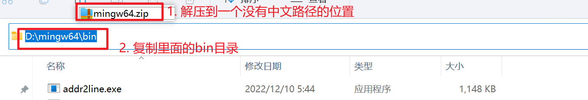</p><ol list="u0a40ff9a" start="4"><li data-lake-id="u2fd26ac6" fid="uc5052201" id="u2fd26ac6"><span data-lake-id="u05f34f2d" id="u05f34f2d">打开高级系统设置</span></li></ol><p data-lake-id="u8ee33671" id="u8ee33671">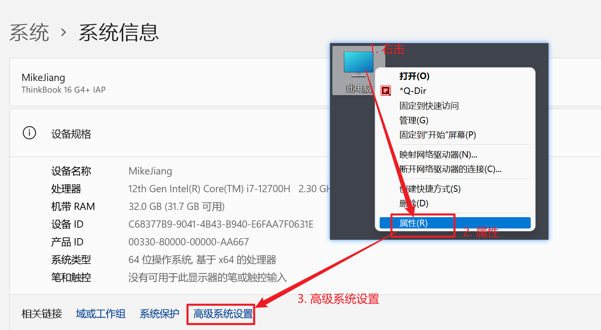</p><ol list="ud6f6d9f1" start="5"><li data-lake-id="ubd5f517d" fid="u7dfcf1d9" id="ubd5f517d"><span data-lake-id="u619c15f1" id="u619c15f1">编辑Path环境变量</span></li></ol><p data-lake-id="ud98a0f3d" id="ud98a0f3d">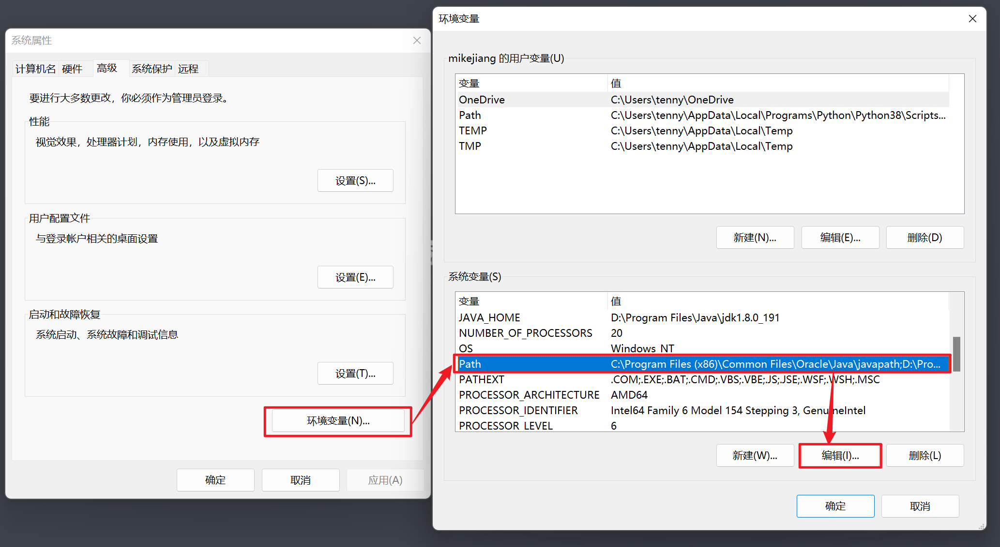</p><ol list="ufb663f45" start="6"><li data-lake-id="uf547887e" fid="u7603dd2f" id="uf547887e"><span data-lake-id="uc0d48a12" id="uc0d48a12">新建路径</span></li></ol><p data-lake-id="ub60f505b" id="ub60f505b">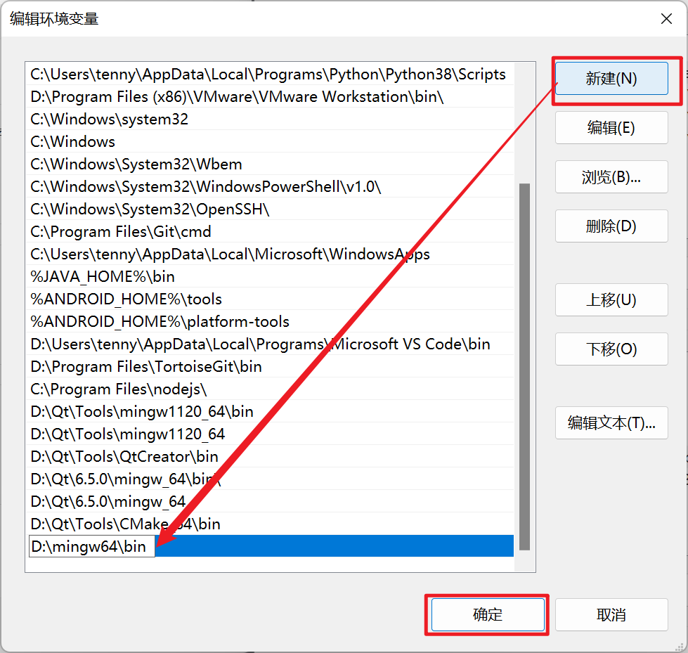</p><ol list="ufb663f45" start="7"><li data-lake-id="ue093d0c1" fid="u7603dd2f" id="ue093d0c1"><span data-lake-id="u984c010e" id="u984c010e">重启电脑，为了让环境变量生效</span></li><li data-lake-id="ub0e40984" fid="u7603dd2f" id="ub0e40984"><span data-lake-id="u53278e64" id="u53278e64">打开命令行，输入</span><code data-lake-id="ua540a4b7" id="ua540a4b7"><span data-lake-id="u5ef2f021" id="u5ef2f021">gcc -v</span></code><span data-lake-id="u5b818a76" id="u5b818a76">进行校验，是否配置环境变量成功</span></li></ol><p data-lake-id="uc64602f1" id="uc64602f1">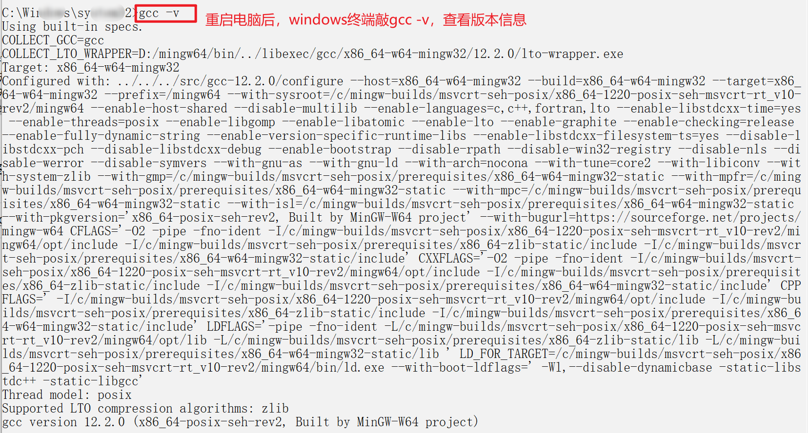</p><h2 data-lake-id="mxYjL" id="mxYjL"><span data-lake-id="u7715032e" id="u7715032e">vscode安装</span></h2><ul list="ue1d57806"><li data-lake-id="u5850d53d" fid="u3ff91a15" id="u5850d53d"><span class="lake-fontsize-12" data-lake-id="u2027edcf" id="u2027edcf" style="color: rgb(51, 51, 51)">官网下载地址：</span><a data-lake-id="u84f76f17" href="https://code.visualstudio.com/Download" id="u84f76f17" rel="noopener noreferrer" target="_blank"><span data-lake-id="u5dacd85a" id="u5dacd85a">https://code.visualstudio.com/Download</span></a></li><li data-lake-id="u9bc3737d" fid="u3ff91a15" id="u9bc3737d"><span class="lake-fontsize-12" data-lake-id="u64c39834" id="u64c39834" style="color: rgb(51, 51, 51)">安装说明，基本上一路下一步即可</span></li></ul><ul data-lake-indent="1" list="ue1d57806"><li data-lake-id="u8c3954b3" fid="u82b1c0a9" id="u8c3954b3"><span class="lake-fontsize-12" data-lake-id="u7cd3f0bd" id="u7cd3f0bd" style="color: rgb(51, 51, 51)">可以自己选择安装路径</span></li><li data-lake-id="ue3a8b76f" fid="u82b1c0a9" id="ue3a8b76f"><span class="lake-fontsize-12" data-lake-id="u44332af6" id="u44332af6" style="color: rgb(51, 51, 51)">可以选择创建桌面快捷方式</span></li></ul><p data-lake-id="u6651d069" id="u6651d069">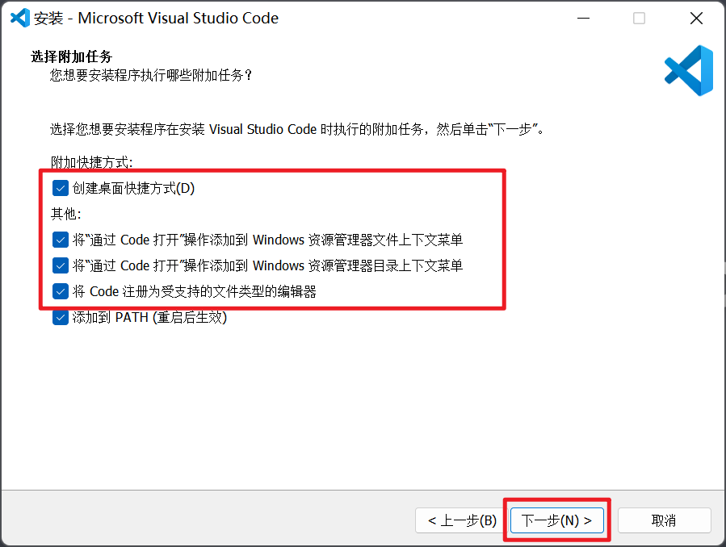</p><h2 data-lake-id="AzkcW" id="AzkcW"><span data-lake-id="u2f669a34" id="u2f669a34" style="color: rgb(51, 51, 51)">vscode主题选择</span></h2><ul list="u1d170a14"><li data-lake-id="ud580aff5" fid="uf51d816e" id="ud580aff5"><span class="lake-fontsize-12" data-lake-id="u784ecdd7" id="u784ecdd7" style="color: rgb(51, 51, 51)">第一次启动软件，选择自己喜欢的主题</span></li></ul><p data-lake-id="u64f75293" id="u64f75293">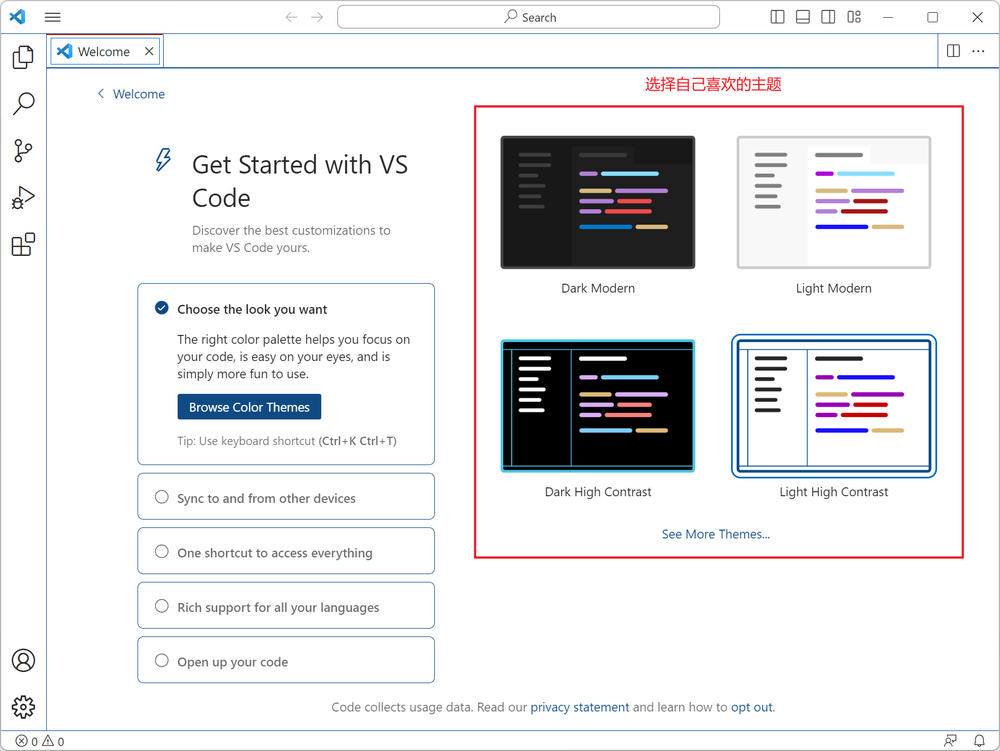</p><ul list="u925aca17"><li data-lake-id="u017bc113" fid="u05a0b5cb" id="u017bc113"><span class="lake-fontsize-12" data-lake-id="u14e395a7" id="u14e395a7" style="color: rgb(51, 51, 51)">设置主题的入口说明</span></li></ul><ul data-lake-indent="1" list="u925aca17"><li data-lake-id="ud6e24385" fid="uac9e473a" id="ud6e24385"><span class="lake-fontsize-12" data-lake-id="uc55d78cd" id="uc55d78cd" style="color: rgb(51, 51, 51)">打开设置</span></li></ul><p data-lake-id="u3bd260fe" id="u3bd260fe">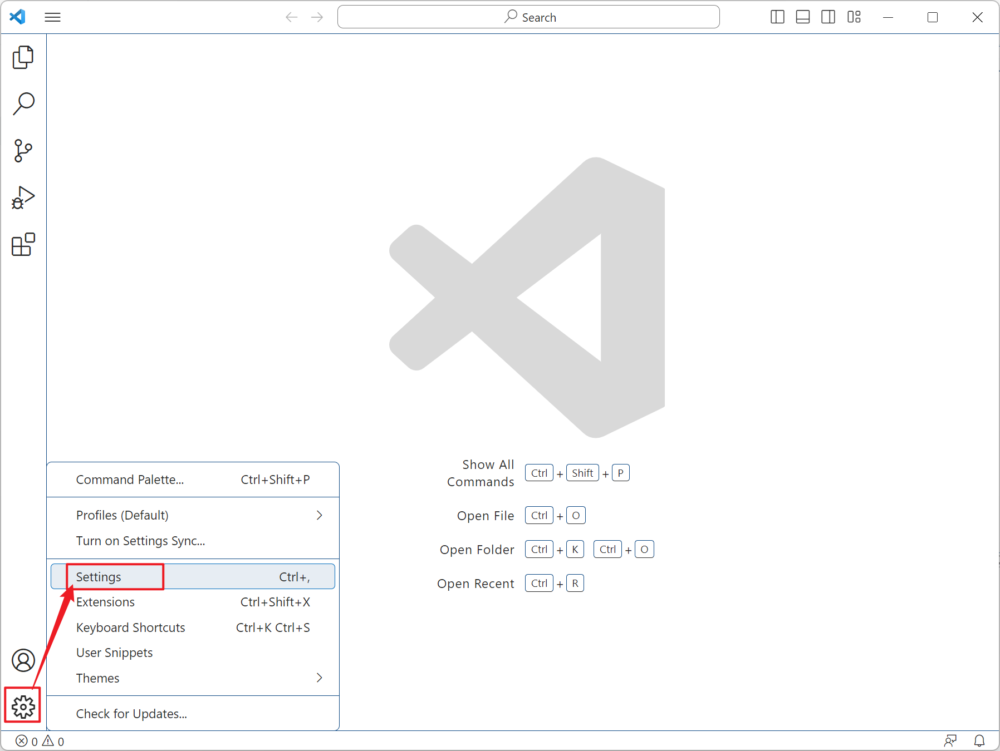</p><ul list="ue1cc11dc"><li data-lake-id="u622026f3" fid="u1f1b95d5" id="u622026f3"><span class="lake-fontsize-12" data-lake-id="ua9a91747" id="ua9a91747" style="color: rgb(51, 51, 51)">输入 theme 后，再在设置页面选择自己喜欢的主题</span></li></ul><p data-lake-id="ucdb97e09" id="ucdb97e09">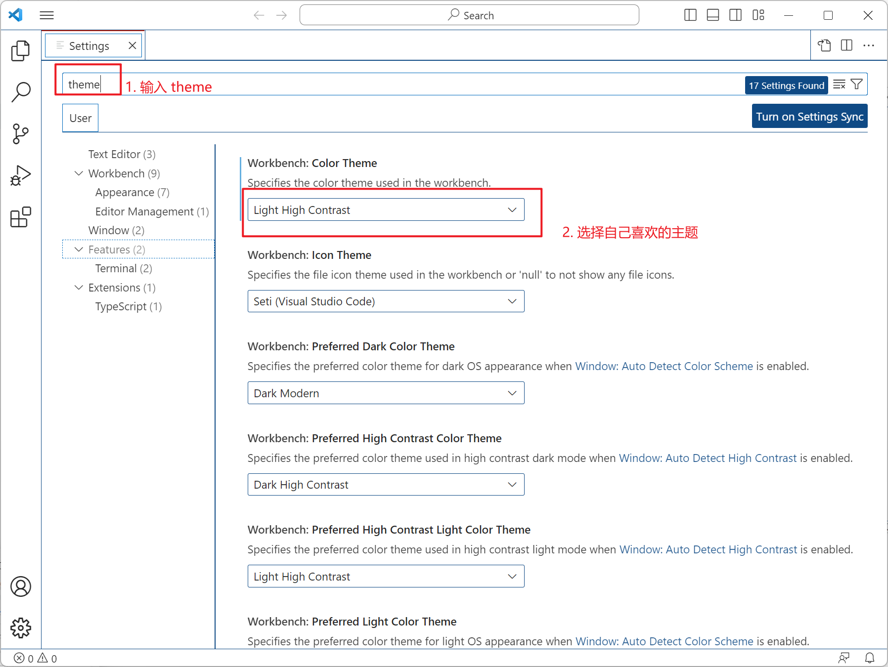</p><h2 data-lake-id="T500H" id="T500H"><span data-lake-id="u51abf0fb" id="u51abf0fb">Trae进入设置的方式</span></h2><p data-lake-id="ub5d8c7b2" id="ub5d8c7b2">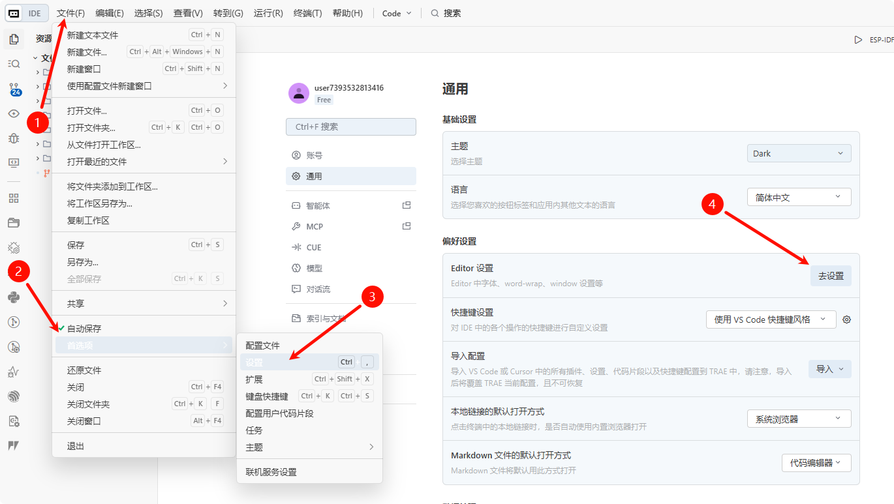</p><h2 data-lake-id="Dk7LK" id="Dk7LK"><span data-lake-id="ub3089298" id="ub3089298" style="color: rgb(51, 51, 51)">vscode插件下载</span></h2><h3 data-lake-id="XPgfi" id="XPgfi"><span data-lake-id="uddf503b5" id="uddf503b5">修改插件市场地址</span></h3><p data-lake-id="u92996353" id="u92996353"><span data-lake-id="u9292e021" id="u9292e021">修改market市场地址, 默认trae用的是开源市场, 插件较少</span></p><p data-lake-id="u144f78d9" id="u144f78d9"><span data-lake-id="ud017ec53" id="ud017ec53">粘贴地址: </span><code data-lake-id="u00e57887" id="u00e57887"><span data-lake-id="u29306f60" id="u29306f60">https://marketplace.visualstudio.com/</span></code></p><p data-lake-id="ud65422ce" id="ud65422ce">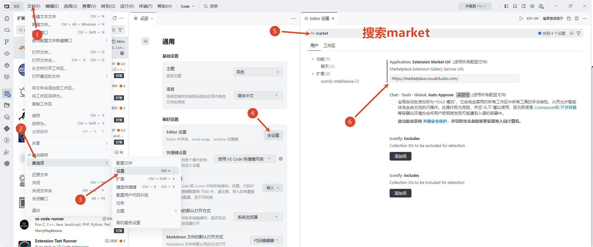</p><p data-lake-id="uba4ebdc7" id="uba4ebdc7"><span data-lake-id="uabf3d9f5" id="uabf3d9f5">​</span><br/></p><ul list="u4d80e7b3"><li data-lake-id="u4b2dbef2" fid="u9c39a954" id="u4b2dbef2"><span class="lake-fontsize-12" data-lake-id="u6b286aea" id="u6b286aea" style="color: rgb(51, 51, 51)">拓展插件入口</span></li></ul><p data-lake-id="u376618ce" id="u376618ce">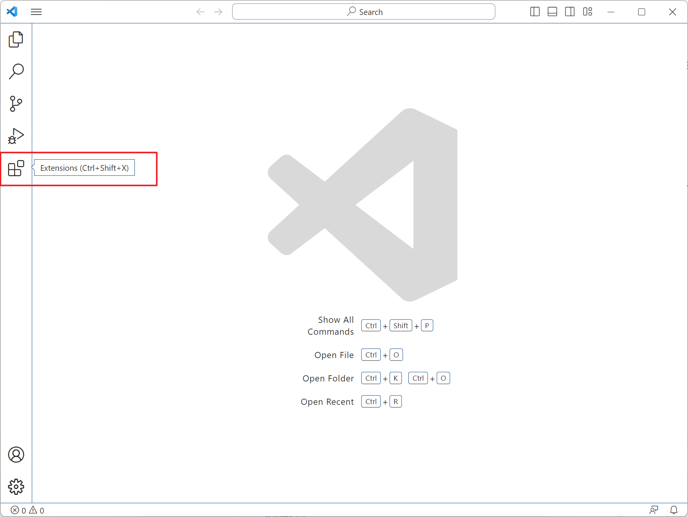</p><h3 data-lake-id="ePCHm" id="ePCHm"><span data-lake-id="u90cb9238" id="u90cb9238" style="color: rgb(51, 51, 51)">简体中文语言包</span></h3><p data-lake-id="u4b07bda8" id="u4b07bda8">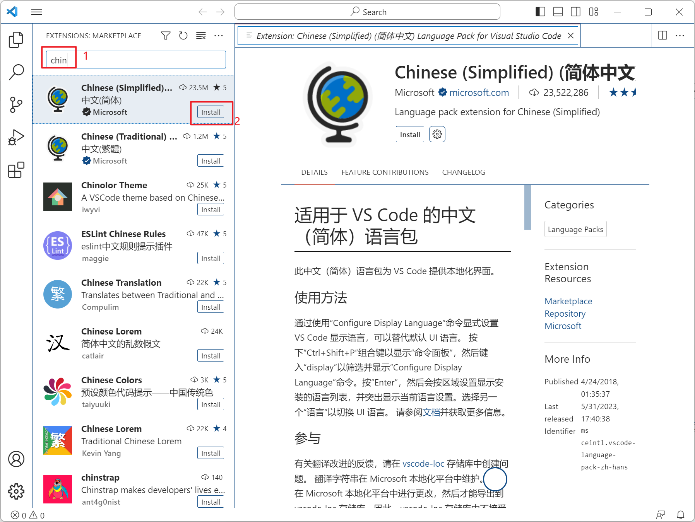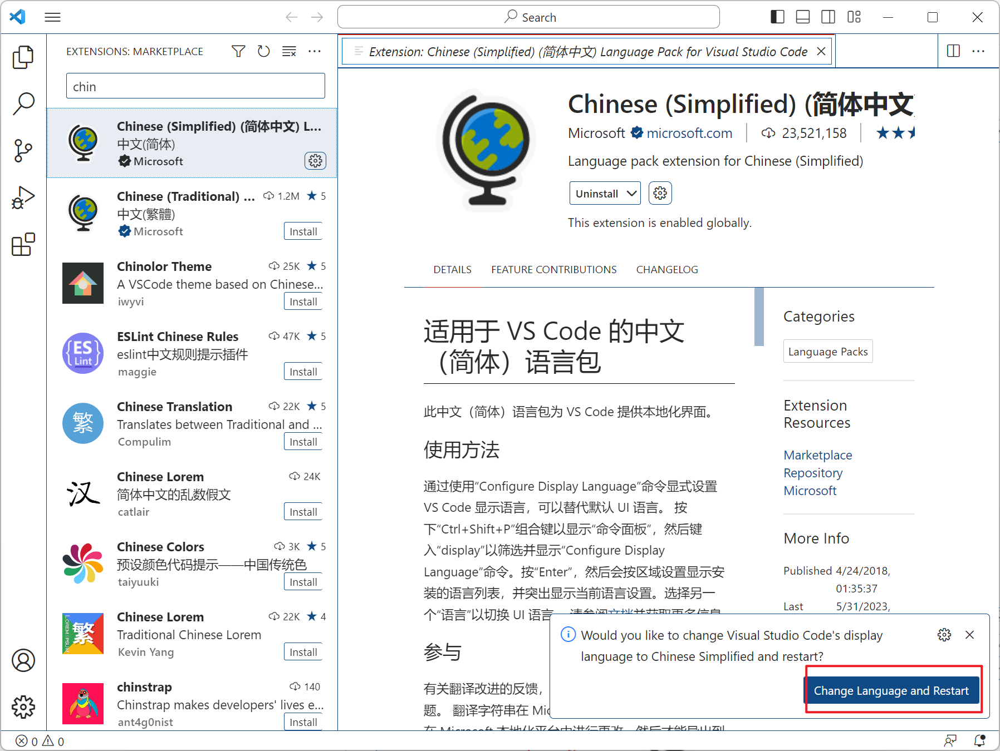</p><h3 data-lake-id="K35Gw" id="K35Gw"><span data-lake-id="uc6906b87" id="uc6906b87" style="color: rgb(51, 51, 51)">C语言配套插件</span></h3><p data-lake-id="u3aaacd12" id="u3aaacd12"><span class="lake-fontsize-12" data-lake-id="u038bfacc" id="u038bfacc">搜索C++, 安装</span><code data-lake-id="u52c6816e" id="u52c6816e"><span class="lake-fontsize-12" data-lake-id="u0334000f" id="u0334000f">C/C++ Extension Pack</span></code></p><p data-lake-id="u45157b66" id="u45157b66">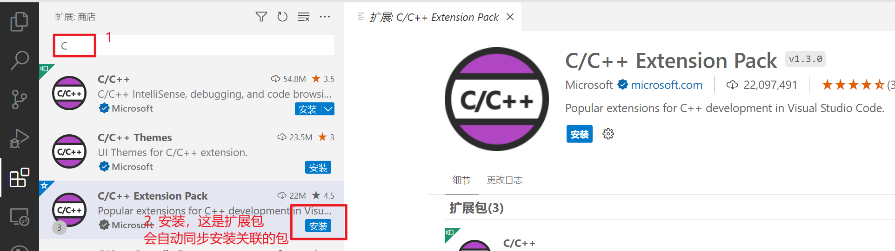</p><p data-lake-id="ub783fef6" id="ub783fef6"><span data-lake-id="u742561e7" id="u742561e7">搜索 Runner</span></p><p data-lake-id="u294a6e01" id="u294a6e01">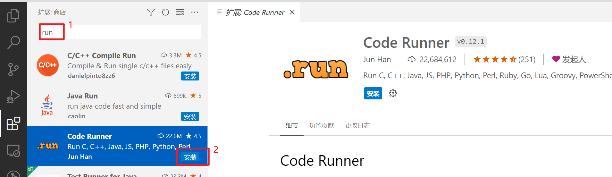</p><h2 data-lake-id="coqtK" id="coqtK"><span data-lake-id="u2358f36d" id="u2358f36d" style="color: rgb(18, 18, 18)">Code runner设置</span></h2><h4 data-lake-id="SdAux" id="SdAux"><span data-lake-id="uea3b1c94" id="uea3b1c94" style="color: rgb(18, 18, 18)">Run In Terminal</span></h4><p data-lake-id="u67ab5bf8" id="u67ab5bf8">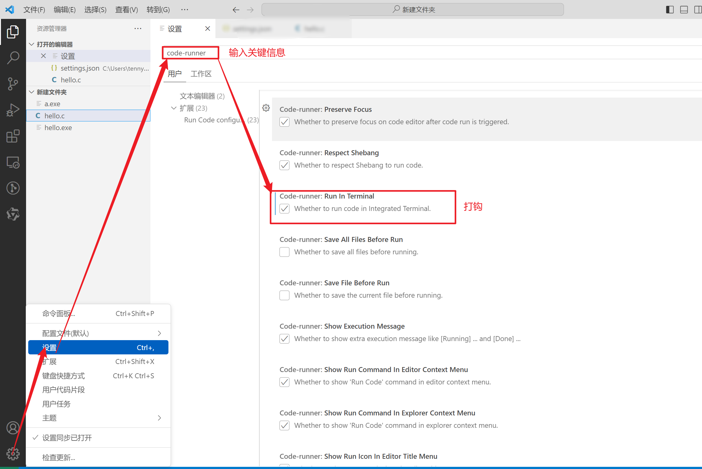</p><h4 data-lake-id="GUSBn" id="GUSBn"><span data-lake-id="u50794850" id="u50794850">C和CPP编译编码指定</span></h4><span class="yuque-card-unsupported">[codeblock]</span><p data-lake-id="ud0da6cdb" id="ud0da6cdb"><span data-lake-id="uc877dc88" id="uc877dc88">Trae里流程如下</span></p><p data-lake-id="u496eaf4a" id="u496eaf4a">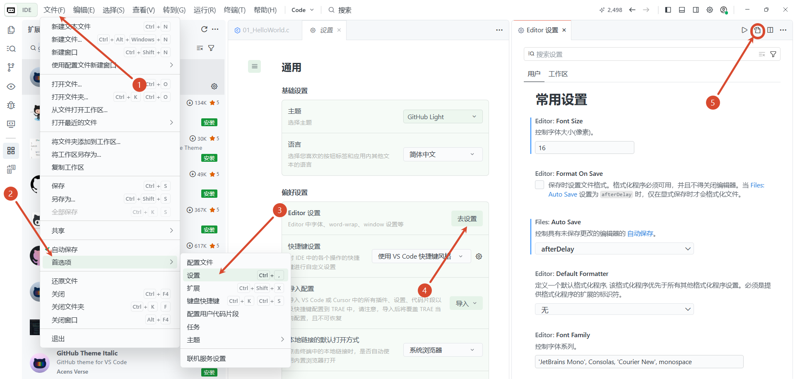</p><p data-lake-id="ufa1dfd50" id="ufa1dfd50"><span data-lake-id="uaf84ad69" id="uaf84ad69">VSCode里流程如下</span></p><p data-lake-id="u91d4d21c" id="u91d4d21c">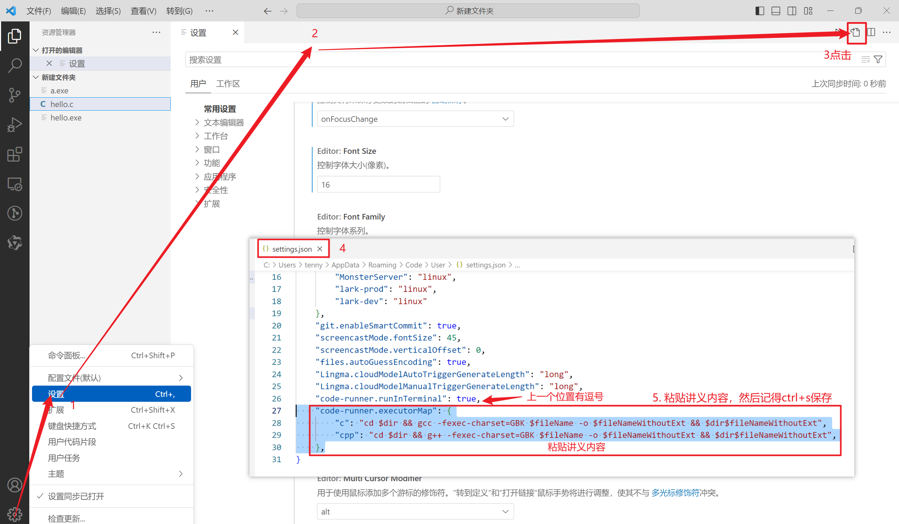</p><h2 data-lake-id="MzvGj" id="MzvGj"><span class="lake-fontsize-12" data-lake-id="ua30f6fa0" id="ua30f6fa0">配置文件自动识别编码</span></h2><p data-lake-id="u9cdba952" id="u9cdba952"><span data-lake-id="uc66e8f02" id="uc66e8f02">Trae流程</span></p><p data-lake-id="u44c89985" id="u44c89985"></p><p data-lake-id="u1d5f470a" id="u1d5f470a"><span data-lake-id="u74611d7f" id="u74611d7f">VSCode流程</span></p><p data-lake-id="u9e598112" id="u9e598112">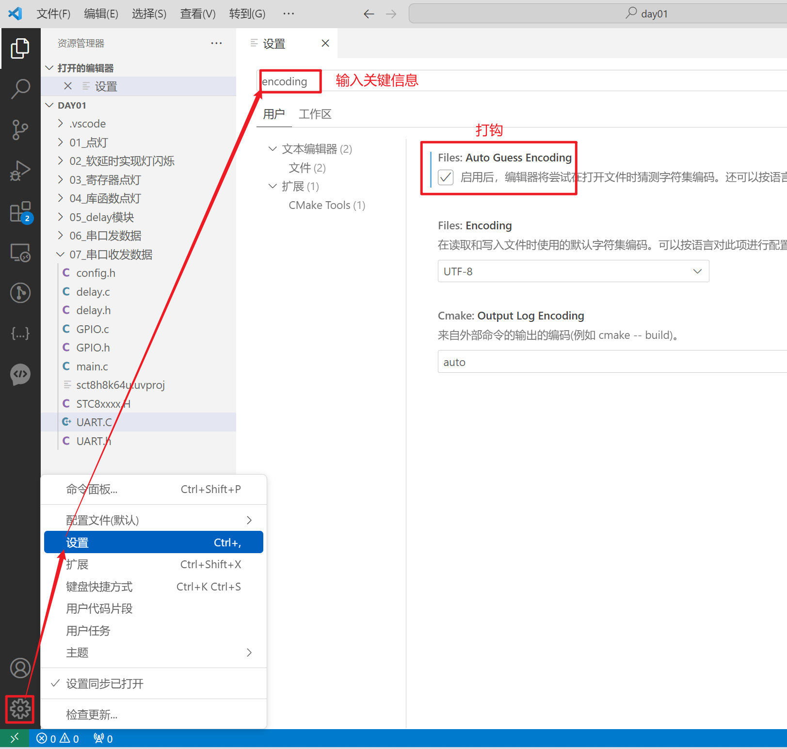</p><h2 data-lake-id="GQ1RO" id="GQ1RO"><span data-lake-id="ue3bf4641" id="ue3bf4641">配置文件自动保存</span></h2><p data-lake-id="uaa46f8e7" id="uaa46f8e7">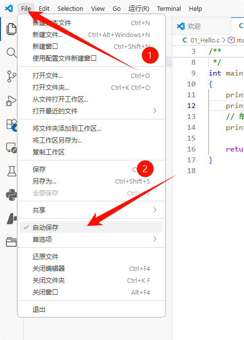</p><p data-lake-id="u2779e2af" id="u2779e2af"><br/></p><h2 data-lake-id="kyK6b" id="kyK6b"><span data-lake-id="u60ab74f5" id="u60ab74f5" style="color: rgb(51, 51, 51)">编写和运行C代码</span></h2><ul list="ua4b26486"><li data-lake-id="u0773b1e8" fid="u94541f05" id="u0773b1e8"><span class="lake-fontsize-12" data-lake-id="uf4664902" id="uf4664902" style="color: rgb(51, 51, 51)">新建文件夹</span></li></ul><p data-lake-id="ue13d79aa" id="ue13d79aa">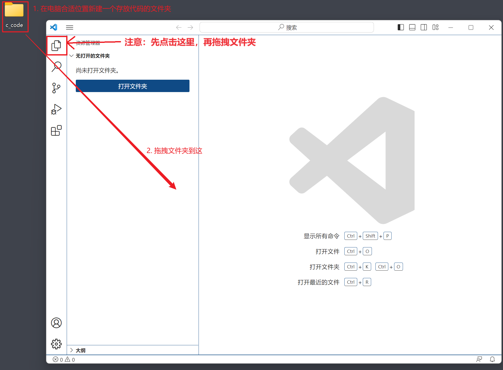</p><ul list="ub64fb348"><li data-lake-id="uc82dffbd" fid="u4c50d32a" id="uc82dffbd"><span class="lake-fontsize-12" data-lake-id="ub148a197" id="ub148a197" style="color: rgb(51, 51, 51)">编辑和运行代码</span></li></ul><p data-lake-id="u106aefe2" id="u106aefe2">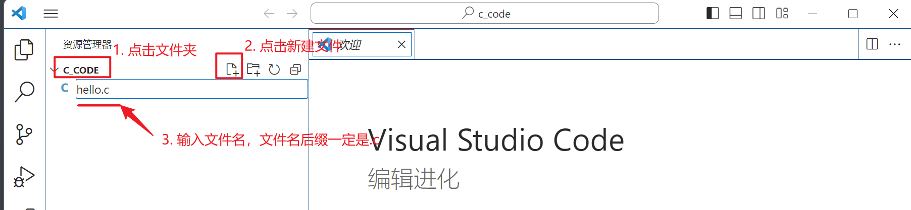</p><p data-lake-id="uf3aa5960" id="uf3aa5960"><span class="lake-fontsize-12" data-lake-id="ua2906d25" id="ua2906d25" style="color: rgb(51, 51, 51)">示例代码(直接复制粘贴)：</span></p><span class="yuque-card-unsupported">[codeblock]</span><p data-lake-id="u0a24f25f" id="u0a24f25f">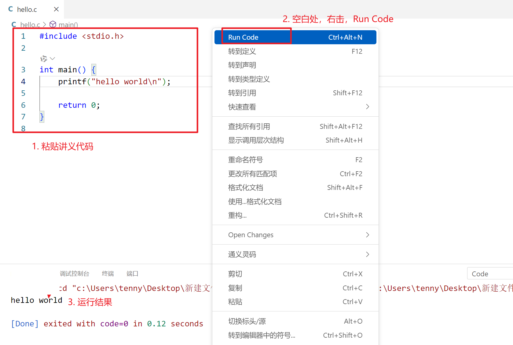</p><h2 data-lake-id="EtQGG" id="EtQGG"><span data-lake-id="u30ba4534" id="u30ba4534" style="color: rgb(51, 51, 51)">设置用户代码块片段</span></h2><p data-lake-id="u8296169f" id="u8296169f"><span data-lake-id="ufdd49675" id="ufdd49675">Trae设置入口</span></p><p data-lake-id="ucd5025f9" id="ucd5025f9">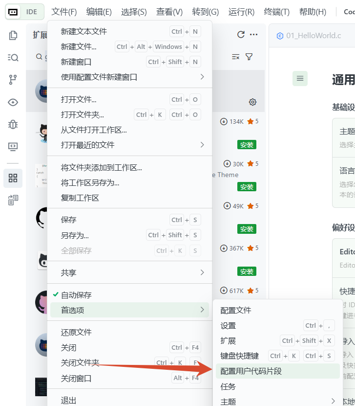</p><p data-lake-id="udc3e376b" id="udc3e376b"><span class="lake-fontsize-12" data-lake-id="u5c7f83aa" id="u5c7f83aa" style="color: rgb(51, 51, 51)">VSCode设置入口</span></p><p data-lake-id="uf470bc23" id="uf470bc23">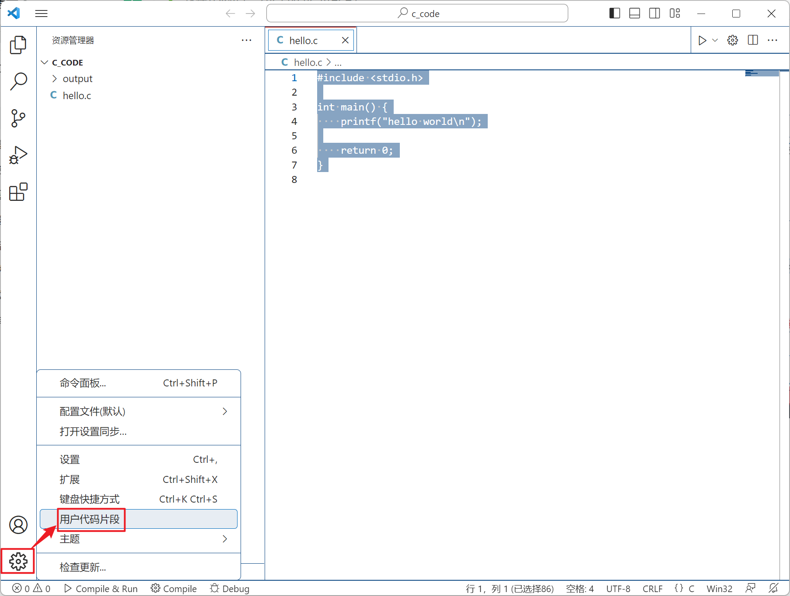</p><ul list="ub8ae4cea"><li data-lake-id="ubc79f319" fid="uf678435b" id="ubc79f319"><span class="lake-fontsize-12" data-lake-id="u7365601e" id="u7365601e" style="color: rgb(51, 51, 51)">选择C</span></li></ul><p data-lake-id="u294d0d8a" id="u294d0d8a">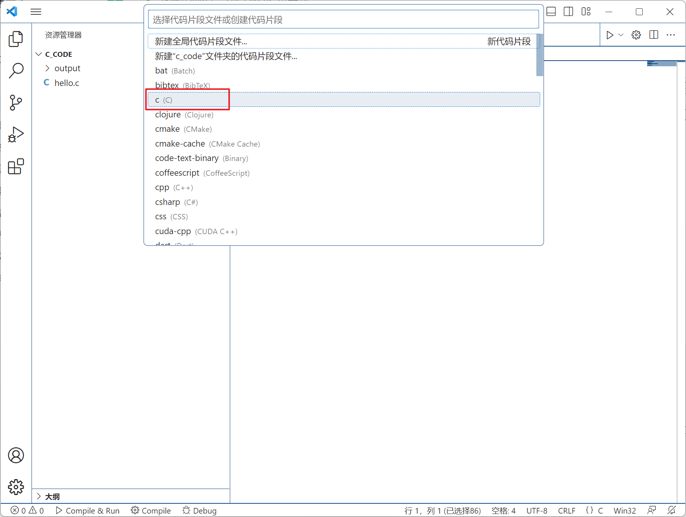</p><ul list="uabd770fd"><li data-lake-id="u16dbe5c7" fid="uf16ee456" id="u16dbe5c7"><span class="lake-fontsize-12" data-lake-id="u14063c6f" id="u14063c6f" style="color: rgb(51, 51, 51)">替换配置文件内容</span></li></ul><span class="yuque-card-unsupported">[codeblock]</span><p data-lake-id="u43345b57" id="u43345b57">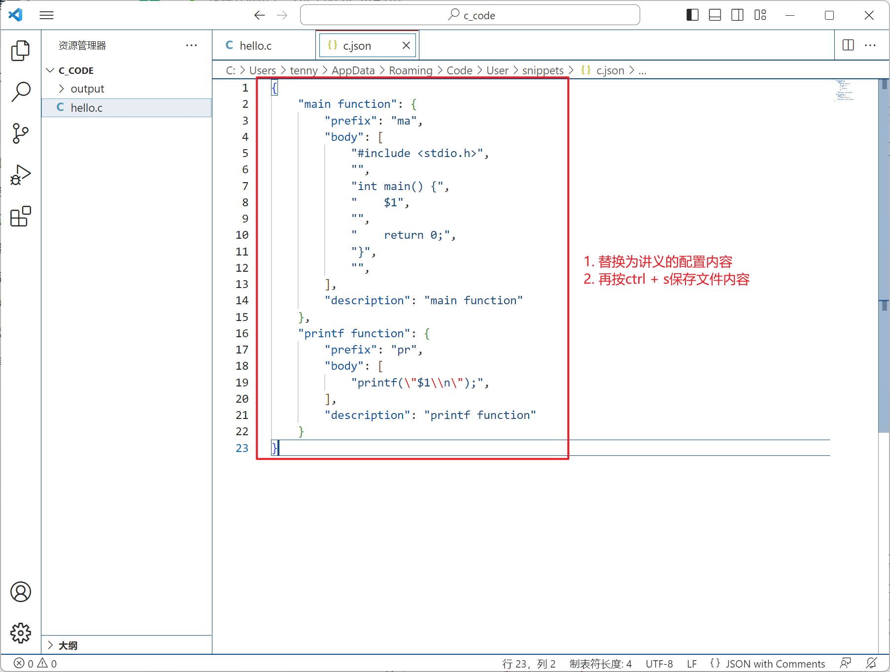</p><ul list="ua9e9fef9"><li data-lake-id="u88b51c5e" fid="u925e8d53" id="u88b51c5e"><span class="lake-fontsize-12" data-lake-id="u41f37c75" id="u41f37c75" style="color: rgb(51, 51, 51)">验证是否能插入自定义的代码块</span></li></ul><p data-lake-id="uac227106" id="uac227106">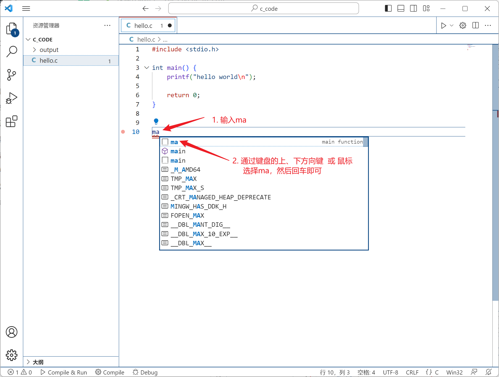<span data-lake-id="u62bef877" id="u62bef877"><br> </br></span></p><h2 data-lake-id="Gc4gc" id="Gc4gc"><span data-lake-id="uc6d9aa8b" id="uc6d9aa8b">解决红色波浪号和无法跳转问题</span></h2><p data-lake-id="uf0f99300" id="uf0f99300"><span data-lake-id="ud0dfe200" id="ud0dfe200">如果头文件出现色波浪号问题</span></p><p data-lake-id="u5cc83e34" id="u5cc83e34"></p><h3 data-lake-id="elQ9P" id="elQ9P"><span data-lake-id="u7b80fc94" id="u7b80fc94">禁用clangd插件</span></h3><p data-lake-id="u05050d10" id="u05050d10"><span data-lake-id="u37da32f7" id="u37da32f7">确保clangd是“用户已全局禁用此扩展”状态</span></p><p data-lake-id="u32468025" id="u32468025"></p><h3 data-lake-id="vGC3N" id="vGC3N"><span data-lake-id="u652a7b31" id="u652a7b31">开启Intelli</span></h3><p data-lake-id="u1c8c3d27" id="u1c8c3d27"><span data-lake-id="u1dd90838" id="u1dd90838">如果还有波浪号，建议按如下步骤开启Intelli</span></p><p data-lake-id="u3ac2725b" id="u3ac2725b"></p><p data-lake-id="u5589f7c2" id="u5589f7c2"><span data-lake-id="u5a623626" id="u5a623626">配置GCC</span></p><p data-lake-id="uc3b01693" id="uc3b01693">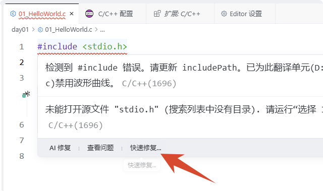</p><p data-lake-id="uc1fc5fa7" id="uc1fc5fa7"></p><p data-lake-id="u4f49732b" id="u4f49732b"><span data-lake-id="u76350e5a" id="u76350e5a">或者通过如下方式打开设置页面</span></p><p data-lake-id="ue85aa4dc" id="ue85aa4dc"><code data-lake-id="u8515a1bc" id="u8515a1bc"><span data-lake-id="u196b4f71" id="u196b4f71">F1</span></code><span data-lake-id="u1cfa234c" id="u1cfa234c">或</span><code data-lake-id="u56d021e8" id="u56d021e8"><span data-lake-id="uec874ede" id="uec874ede">Ctrl + Shift + P</span></code><span data-lake-id="u2a0b06d2" id="u2a0b06d2">输入</span><code data-lake-id="u090c1d70" id="u090c1d70"><span data-lake-id="u445f3bf0" id="u445f3bf0">编辑配置(UI)</span></code></p><p data-lake-id="ub0c88c31" id="ub0c88c31">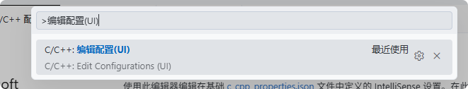</p><p data-lake-id="uce3edd61" id="uce3edd61">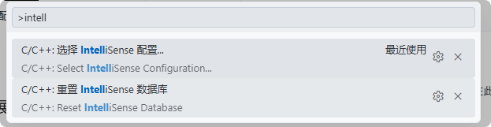</p><p data-lake-id="u6eab54b4" id="u6eab54b4"><span data-lake-id="u7ab22982" id="u7ab22982">输入或选择正确的gcc路径:</span></p><p data-lake-id="u86220235" id="u86220235">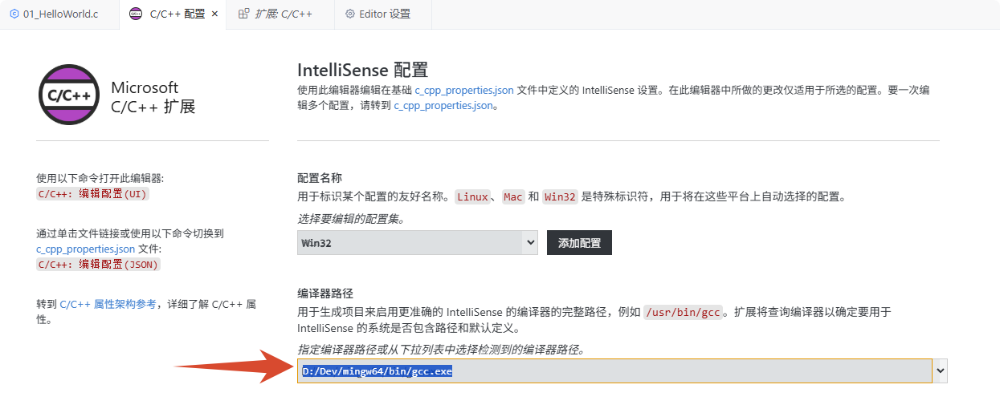</p><p data-lake-id="u24aaa372" id="u24aaa372"><br/></p><h3 data-lake-id="mt0lz" id="mt0lz"><span data-lake-id="ub73adb83" id="ub73adb83">源代码跳转问题</span></h3><p data-lake-id="ucfa52349" id="ucfa52349"><br/></p><ul list="u2a9e0c1f"><li data-lake-id="u2032992a" fid="uaeecf345" id="u2032992a"><span data-lake-id="ua3c0fd18" id="ua3c0fd18">按下F1或Ctrl + Shift + P进入命令输入模式</span></li><li data-lake-id="u11d4aae4" fid="uaeecf345" id="u11d4aae4"><span data-lake-id="u44284de5" id="u44284de5">输入 </span><code data-lake-id="ud40ae5c7" id="ud40ae5c7"><span data-lake-id="u9357c8b9" id="u9357c8b9">C++ UI</span></code><span data-lake-id="u3a757799" id="u3a757799"> 按回车</span></li><li data-lake-id="u0168f307" fid="uaeecf345" id="u0168f307"><span data-lake-id="uc1d0fbdc" id="uc1d0fbdc">按照下图进行配置：这里的gcc要根据你的具体路径</span></li></ul><p data-lake-id="ua3b8e338" id="ua3b8e338"></p>